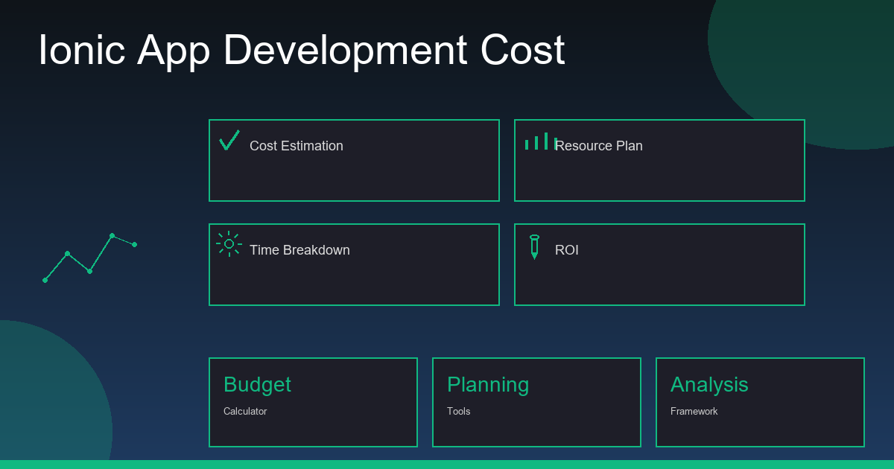

The first question almost every client asks me is: "How much will my app cost?" The honest answer is: it depends — but I can give you real numbers, real cost drivers, and the strategies I use to help clients build great apps without overspending.
I've seen clients burn $50,000 on apps that could have launched for $8,000. I've also seen $3,000 apps that were brilliant because the scope was right. The difference is almost never the technology — it's the scope, the process, and the developer selection. This article covers all three.
What Does Ionic App Development Actually Cost in 2026?
Here are honest market rates based on current engagements. These reflect India-based senior freelance and small agency pricing — the sweet spot for quality without enterprise pricing.
| App Type | Screens | India (USD) | USA/UK (USD) | Timeline |
|---|---|---|---|---|
| Simple MVP | 3–5 screens | $800–$1,500 | $5,000–$12,000 | 3–4 weeks |
| Standard App | 8–15 screens | $2,000–$4,000 | $12,000–$30,000 | 6–10 weeks |
| Full-Featured App | 15–30 screens | $4,000–$8,000 | $25,000–$60,000 | 3–5 months |
| Enterprise App | 30+ screens | $8,000–$20,000+ | $60,000–$200,000+ | 6–12 months |
What Drives Ionic App Development Cost — The 6 Real Factors
1. Number of Screens and Features
Every screen and every feature takes time to build, test, and integrate. A login screen with email/password takes 4–6 hours. A login screen with social login (Google, Apple, Facebook), biometric login, forgot password, and email verification takes 16–24 hours. Features compound. This is why scoping is the single most important cost-control activity.
2. Backend & API Complexity
A simple app reading data from a public REST API is cheap. An app with a custom backend (user management, database, file uploads, push notification triggers, scheduled jobs) adds significantly to cost. A full Laravel backend for a medium-complexity app adds $1,500–$4,000 to the project budget.
3. Design Requirements
If you supply finished Figma designs, development is faster. If the developer must create the design from scratch, add 20–30% to the budget. If you need custom animations, complex onboarding flows, or heavily branded UI — add more. Plain functional UI (typical for B2B apps) is faster and cheaper than consumer-grade design.
4. Third-Party Integrations
Each external integration (payment gateway, CRM, maps, analytics, video SDK, SMS OTP) adds development and testing time. Payment gateways (Stripe, Razorpay) typically add 8–16 hours. Maps and geolocation add 6–12 hours. Video calling SDKs (Agora, Twilio) can add 20–40 hours.
5. Platforms: One or Both
One of Ionic's biggest advantages is that iOS and Android share the same codebase. However, there is always some platform-specific work — different UI guidelines, different native API behaviors, different App Store submission processes. A dual-platform Ionic app typically costs 20–30% more than a single-platform build, not 100% more like building native apps.
6. Developer Experience and Location
A junior developer charging $10/hour may look cheap but can cost more in the long run — bugs, poor architecture, extra revisions, and code that's hard to maintain. A senior developer at $30–$40/hour gets the architecture right the first time, writes maintainable code, and typically delivers in fewer hours. For anything beyond a simple MVP, senior > junior.
Hidden Costs Nobody Tells You About
| Hidden Cost | Amount | Frequency |
|---|---|---|
| Apple Developer Account | $99 | Per year |
| Google Play Developer Account | $25 | One-time |
| Backend Hosting (VPS/Cloud) | $20–$100/month | Monthly |
| Push Notification Service | Free–$50/month | Monthly |
| SSL Certificate | Free (Let's Encrypt) | Annually |
| Annual OS Update Maintenance | 10–20% of build cost | Per year |
| App Store Screenshots & Metadata | $100–$500 | One-time |
| Third-Party API Subscriptions | $0–$500+/month | Monthly |
7 Proven Strategies to Reduce Ionic App Cost
1. Start with an MVP — Not the Full Vision Save 50–70%
List every feature you want. Then ask: "What is the minimum set of features that lets us validate our idea and get our first 100 users?" Build that first. Everything else is version 2. MVPs typically cost 30–50% of the "full vision" app and teach you more about what users actually need.
2. Use Ionic's Pre-Built UI Components Save 20–30%
Ionic ships 100+ production-ready UI components. Don't pay a developer to build a date picker, modal, tab bar, or pull-to-refresh from scratch — use the framework's components. Only invest in custom UI where it genuinely differentiates your product.
3. Choose Firebase Over a Custom Backend (for Simple Apps) Save $1,500–$3,000
For apps with standard CRUD operations, user auth, file storage, and real-time data, Firebase eliminates the need for a custom backend entirely. Firebase free tier covers most MVP use cases. Only build a custom Laravel/Node backend when your business logic genuinely requires it.
4. Hire a Senior Full Stack Developer, Not Two Specialists Save 30–40%
A developer who builds both the Ionic frontend and the backend API saves you 30–40% versus hiring a frontend specialist and a backend specialist separately. It also eliminates integration headaches and communication overhead. This is why full stack Ionic developers command a premium — they're worth it.
5. Provide Clear Requirements Before Development Starts Save 20–35%
Scope creep — adding features mid-development — is the single biggest budget killer. Every new feature during development costs 2–3× more than if it had been scoped upfront. Write a clear requirements document. Review wireframes before development starts. Freeze scope for v1.
6. Use Capacitor Over Custom Native Modules Save $500–$2,000
Capacitor has official plugins for Camera, Geolocation, Push Notifications, Biometrics, File System, and more — all free and open source. Only build a custom native module when there is genuinely no Capacitor plugin for what you need. Custom native code requires writing Kotlin/Swift and is expensive.
7. Hire from India, Not the US or UK Save 60–75%
A senior Ionic developer in India charges $20–$40/hour. The same experience level in the USA charges $100–$180/hour. For a 500-hour project, that's a $40,000–$70,000 difference for the same quality output. India's pool of senior mobile developers with global client experience is deep and growing.
The Right Questions to Ask Any Ionic Developer Before Hiring
- Can I see your Ionic apps on the App Store? — Real apps, not just screenshots
- Do you write TypeScript or JavaScript? — TypeScript indicates senior-level discipline
- What state management approach do you use? — NgRx, Services, or Signals — they should have a clear answer
- Have you used Capacitor or Cordova? — Capacitor is the modern standard; Cordova-only experience is outdated
- Will you handle the App Store submission? — Some developers build but won't handle publishing
- What is included in your post-launch support? — Get specifics, not vague promises
Get a Fixed-Price Quote for Your Ionic App
Tell me what you need in a free 30-minute call. I'll give you an honest scope, a fixed quote, and a clear delivery plan — no hourly surprises.
View Pricing Packages →
Anju Batta
Senior Full Stack Developer with 15+ years of experience and 500+ projects. I've helped dozens of clients scope, budget, and build Ionic apps that launched on time and on budget. Based in Chandigarh, India — available globally.
Get Free Consultation →